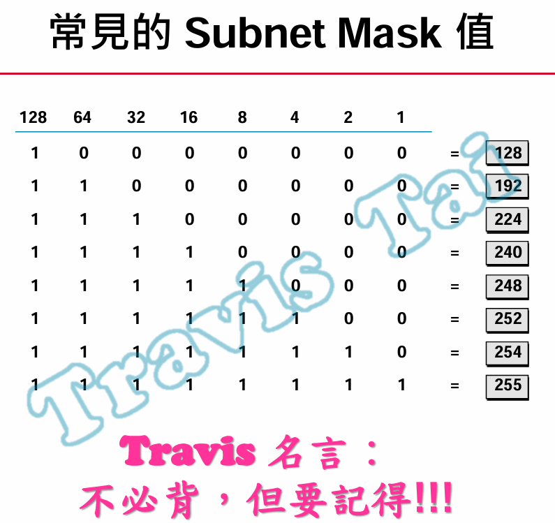

本章
這篇文章將詳細介紹如何將 Cisco Packet Tracer 基礎操作及基本概念。
IP 地址
- IPv4：由 32 位元組成，通常表示為點分十進制形式，如 192.168.1.1。IPv4 地址總共能提供約 43 億個地址。
- IPv6：由 128 位元組成，通常表示為八組十六進制數字，如 2001:0db8:85a3:0000:0000:8a2e:0370:7334，可以提供極大量的地址，解決了 IPv4 地址耗盡的問題。
- IP 地址類型
1
2
3
4
5私有 IP 地址：用於局域網（LAN）內部，不能直接在互聯網上路由。常見的私有 IP 範圍包括：
10.0.0.0 - 10.255.255.255
172.16.0.0 - 172.31.255.255
192.168.0.0 - 192.168.255.255 - NAT（Network Address Translation）
1
2
3
4
NAT 的作用：NAT 技術允許多台設備共用一個公有 IP 地址來訪問互聯網。NAT 將私有 IP 地址轉換為公有 IP 地址，並在返回時將公有 IP 地址轉換回私有 IP 地址。
用途：NAT 通常用於家庭和公司網路，以節省公有 IP 地址。
子網掩碼（Subnet Mask）
- 子網掩碼是 32 位元的二進位數，由連續的 1 和 0 組成，通常表示為點分十進制的格式，例如 255.255.255.0。
- 路由器使用子網掩碼來確定目的地址屬於哪個子網，從而決定如何轉發數據包。
- 實際應用
1
2
3分離部門或區域：在企業網路中，不同部門可能使用不同的子網以隔離流量並提高安全性。
提高安全性：通過子網劃分，可以限制子網之間的通信，從而提高網路的安全性和控制力。 - 子網掩碼範例：
1
2
3
4
5/8（255.0.0.0）：網路位為前 8 位，適用於非常大的網路，如 A 類網路。
/16（255.255.0.0）：網路位為前 16 位，適用於中型網路，如 B 類網路。
/24（255.255.255.0）：網路位為前 24 位，適用於小型網路，如 C 類網路。
計算

- 192.168.1.0/24 => 255.255.255.0
- 192.168.1.0/25
1
2
3
4
5
6
7
25 - 24 = 1，對照表 => 128
255 - 128 = 127
故，192.168.1.1 - 192.168.1.126 為可用 ip。
如果 IP 地址超出了某個子網的範圍，那麼該 IP 地址屬於不同的網段（子網）。 - 10.1.16.9/29
1
2
3
4
5
6
7
8
9
10
11
12
29 - 24 = 5，對照表 => 248
255 - 248 = 7
子網地址: 找出子網的起始地址，需要將 10.1.16.9 的主機部分歸零來確定子網地址。
10.1.16.00001 | 001 => 10.1.16.8 / 29
故，192.168.1.9 - 192.168.1.14 為可用 ip。
如果 IP 地址超出了某個子網的範圍，那麼該 IP 地址屬於不同的網段（子網）。